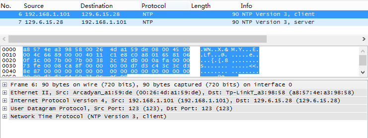
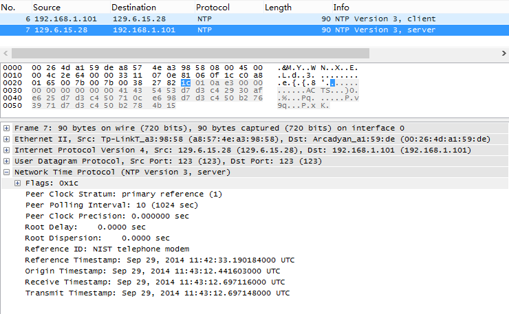
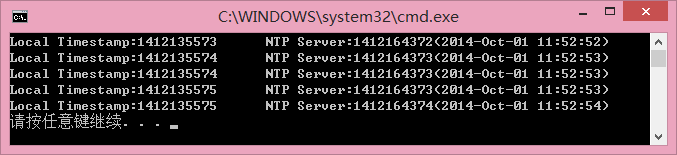

引言
笔者机器上安装了两个系统，一个Linux Ubuntu，一个Windows8.1。让人感到郁闷的是，每次从Ubuntu重启进入Windows时，系统时间总是少了8个小时，每次都要用Windows的时间程序进行同步，也就是下面这个东西：
这个东西其实就是一个NTP Client，从Internet上选择一台NTP Server，获取UTC时间，然后设置本地时间。
于是我想自己实现一个这样的程序，先百度一下吧，网上有很多关于NTP的资料和实现代码，大多是单一平台的，不能跨平台
，下面给几个参考：
http://blog.csdn.net/loongee/article/details/24271129
http://blog.csdn.net/chexlong/article/details/6963541
http://www.cnblogs.com/TianFang/archive/2011/12/20/2294603.html
本文使用boost的Asio来跨平台实现NTP Client.
准备
- 最新的boost库，本文使用的是1.56.0版本
要用到里面的ASIO网络库 - IDE是Visual Studio 2013 with Update3
笔者是版本帝 - WireShark也是最新的1.12.1版本
用来分析Windows自带的NTP Client
NTP Packet分析
这里我们分析的正是上图那个程序，点击立即更新，会发送NTP的请求包，下面是Wireshark的抓包结果：

可以得到下面一些信息：
- NTP时间同步分两个过程，一个Request，一个Response
- 这里的NTP Server的IP地址是129.6.15.28
- 程序没有进行DNS解析，可能是直接保存了IP地址
- NTP服务的端口号是123，Client也使用了123端口，后来发现Client不是一定要使用123端口的
- NTP协议是构建在UDP传输协议上的应用协议
- 这里使用V3版的NTP协议，目前还有v4
好了，有了关于NTP协议的一些基本信息，我们再来看看应用层的详细信息：
Response包：

分了很多字段，关于每个字段的含义请参考上面给出的链接，本文主要讲实现。这里Reference Timestamp就是Request包发送的Timestamp，而Origin,Receive,Transmit都是从Server返回回来的时间，后三个时间都相差非常小，因此方便一点，我们取最后一个Transmit Timestamp作为结果。
编码
boost里面相关库的编译可以参考官方的文档，里面有非常简单的例子。
1. 需要的头文件和名字空间
1 |
|
2. NtpPacket的构造
1 | class NtpPacket { |
这里为了方便存取就没有把struct放到private中，需要注意的是结构体各个字段的顺序和需要进行内存1字节对齐，即使用：
1 |
内存对齐在网络编程中十分重要，他会直接影响Packet的内容，关于内存对齐可以参考：
http://www.cppblog.com/cc/archive/2006/08/01/10765.html
NTP请求包中最重要的是flags，里面存有版本信息等直接影响协议工作的内容，因此不能搞错了。
两个operator重载用来方便读写Packet数据。
再来看看Client类的实现，Client类的主要任务就是发送和接受NTP包，并返回最后那个64bit的Timestamp。
1 | class NtpClient { |
注意几个地方：
1. udp::socket是boost里面使用udp协议的套接字，他的构造需要一个io_service，io_service可以直接在全局区进行声明：
1 | boost::asio::io_service io; |
2. 创建一个endpoint用来表示NTP Server的地址：
1 | udp::endpoint ep(boost::asio::ip::address_v4::from_string(_serverIp), NTP_PORT); |
向这个ep send_to，并从这个ep receive_from数据包。
3. time_t的定义如下：
1 | typedef __time64_t time_t; /* time value */ |
也就是说这个time_t其实就是一个64bit的int，我们可以用uint64_t这个类型与之互换，他可以用来表示一个Timestamp。
获取最后8字节内容有两种方式，一种是直接复制pBytes的内存，一种是构造NtpPacket，然后取成员，这里选择后者易于理解。
字节序的问题
网络字节序都是大端模式，需要进行转换，由于仅仅需要最后那个uint64_t所以我写了一个针对64bit的字节序转换函数：
1 | static void reverseByteOrder(uint64_t &in) { |
最后一个64bit内容的高32位存了UTC秒数，所以需要取出来，然后再转换为本地时区的秒数。
1 | seconds = (last & 0x7FFFFFFF00000000) >> 32; |
注意最高位是不能取的，尽管是unsigned，至于为什么要- 61533950这个是笔者在自己电脑上尝试出来的，找了很多资料不知是哪里的问题，还请各位知道的读者告诉我哈。
再来看看主函数：
1 | int main(int argc, char* agrv[]) { |
这里进行5次NTP请求，并使用boost的to_simple_string转换UTC时间打印结果。
大概是这种效果：

收尾
同步时间一般都会想到找一个http api接口，本文主要是用了NTP协议。为了跨平台，上面的代码尽可能避免使用平台相关的宏和函数，只要稍作修改就能在各种平台下执行，也得益于boost这个强悍的准标准库给开发者带来的便利。